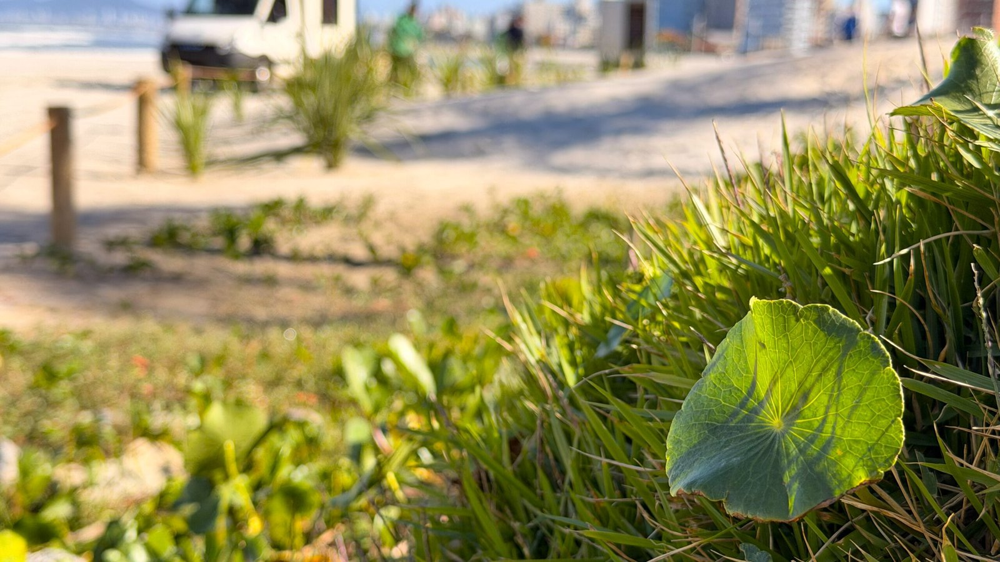

Itapema · Infraestrutura
Itapema · InfraestruturaAlargamento da Meia Praia chega à segunda metade de agosto sem início anunciado
O retrato mais recente do impasse que segura a obra de Itapema.
A Prefeitura de Navegantes começou nesta semana a plantar restinga na faixa de areia nova da Praia do Gravatá. O plantio é exigência da licença ambiental que o IMA deu ao município para engordar a praia, obra de R$ 31,5 milhões concluída em 12 de agosto. A Meia Praia de Itapema tem licença do mesmo IMA desde maio, custa R$ 60 milhões, é mais que o dobro de extensão e ainda não viu a primeira draga.
Em 30 segundos · Modo de Leitura, formato original Santa Informa
Navegantes começou a plantar restinga na praia.
É na faixa de areia nova do Gravatá.
O aviso saiu em 4 de setembro.
O plantio é exigência do IMA.
Veio junto com a licença do alargamento.
São oito espécies, em 60 dias.
A faixa plantada tem 14 metros.
O alargamento custou R$ 31,5 milhões.
Foram 2,3 quilômetros de praia.
A draga trabalhou 22 dias.
A praia reabriu em 12 de agosto.
Em Itapema, a Meia Praia não começou.
São 4,75 km e R$ 60 milhões.
A licença do IMA saiu em maio.
O Ministério Público pediu EIA/RIMA.
A ação é de 11 de junho, sem decisão publicada.
Meio AmbientePublicada em Redação Santa Informa

A Prefeitura de Navegantes começou nesta semana a plantar restinga na faixa de areia nova da Praia do Gravatá. O plantio é uma exigência da licença ambiental que o Instituto do Meio Ambiente de Santa Catarina, o IMA, deu ao município para engordar a praia. O aviso saiu no site da Prefeitura em 4 de setembro. Aqui do lado, a Meia Praia de Itapema tem licença do mesmo IMA desde maio e ainda não viu a primeira draga.
O manejo deve levar cerca de 60 dias. São oito espécies, entre elas a Bromelia antiacantha, o gravatá que dá nome à praia. A faixa plantada tem 14 metros de largura e vai do Molhe do Gravatá até a Pedra da Miraguaia. As mudas são transplantadas de outros pontos da orla do município. A vegetação escolhida é baixa, de propósito, para não tapar a vista de quem chega. O Instituto Ambiental de Navegantes, o IAN, acompanha a evolução nos próximos anos e troca planta que não pegar. Segundo o superintendente do IAN, Diego Dias, a restinga funciona como fixador natural da areia, reduz a erosão de ressaca e de vento e ajuda a garantir a estabilidade do alargamento.
O engordamento do Gravatá custou R$ 31,5 milhões e cobriu 2,3 quilômetros, do Rio das Pedras até o molhe. A licitação tinha estimativa de R$ 43.099.110,15 e fechou com desconto de 26,8%, com a empresa belga Jan de Nul. A draga Galileo Galilei começou a bombear areia em 20 de julho e a praia foi liberada ao público em 12 de agosto, 22 dias depois. A faixa deve acomodar em torno de 70 metros de largura.
A Meia Praia é obra bem maior. São 4,75 quilômetros de orla e R$ 60 milhões, metade da Prefeitura e metade do Estado, com cerca de 498 mil metros cúbicos de areia de uma jazida a 19 quilômetros da costa. O ganho previsto vai de 20 a 60 metros, conforme o trecho, em cerca de quatro meses. A licença do IMA foi entregue em maio. Em 11 de junho, a 1ª e a 3ª Promotorias de Justiça de Itapema entraram com ação civil pública contra o IMA e o município, pedindo Estudo de Impacto Ambiental no lugar do estudo simplificado. O Ministério Público afirma que não é contra a obra, e a Prefeitura sustenta a legalidade do licenciamento. Contamos isso em agosto, e até hoje não localizamos decisão publicada sobre o pedido de urgência.
Navegantes serve de régua para Itapema. Ali a parte barulhenta levou 22 dias. Depois dela vieram mais 60 dias de plantio e anos de acompanhamento, cobrados pelo mesmo órgão que licencia a Meia Praia. O dia em que a draga for embora daqui dificilmente será o fim da obra.
O resumo de 30 segundos está no topo e a versão completa é o texto acima. Aqui ficam as três leituras da casa sobre o mesmo assunto.
Clara, a otimista
Ter o exemplo pronto na mesma região vale muito. Itapema não precisa descobrir sozinha quanto tempo leva o bombeamento, quanto a areia encolhe depois de acomodar e o que o órgão ambiental cobra quando a draga vai embora. Está tudo lá no Gravatá, feito e publicado etapa por etapa.
E a exigência da restinga é boa notícia por si só. Quer dizer que a licença não termina no dia da foto de inauguração. Alguém fica olhando a praia nos anos seguintes, com obrigação de trocar o que morrer.
Seu Prudêncio, o criterioso
Merece atenção a diferença de tamanho entre as duas obras. O Gravatá tem 2,3 quilômetros, a Meia Praia tem 4,75. É mais que o dobro de extensão, quase o dobro de dinheiro e uma jazida a 19 quilômetros da costa. Prazo de quatro meses para esse porte pede cronograma público, e cronograma público ainda não existe.
Vale acompanhar também as condicionantes. Se o IMA cobrou restinga em Navegantes, é razoável esperar exigência parecida aqui, e isso entra no calendário e na conta. Uma sugestão útil seria a Prefeitura de Itapema publicar a licença com a lista completa de condicionantes numa página só, do jeito que Navegantes vem publicando cada etapa da obra dela. Se a decisão judicial demorar, o calendário até o verão fica apertado, e é melhor saber disso em setembro do que em dezembro.
Dito isso, o rumo está correto. Licenciar antes, com estudo, e discutir no Judiciário o tamanho do estudo protege melhor o dinheiro público do que começar a bombear areia e descobrir problema no meio do caminho. E o resultado do vizinho mostra que, quando a parte técnica está resolvida, a obra anda rápido.
Caco, o sarcástico
Navegantes plantou até a bromélia que dá nome à praia. Isso que é caprichar no acabamento. Itapema, por enquanto, tem uma licença, um processo e a mesma faixa de areia de sempre.
E repare no relógio: a parte pesada lá levou vinte e dois dias. Vinte e dois. Aqui já passamos quase três meses discutindo qual estudo estuda melhor o estudo.
Brincadeira à parte, a praia continua no lugar e a fila anda. Enquanto não começa, dá para subir até Navegantes num domingo e ver de perto como fica depois.
Fontes: Prefeitura de Navegantes, notícia de 4 de setembro de 2026, de onde saem o início do plantio, a condição imposta pelo IMA para a licença do alargamento, os 60 dias de manejo, as oito espécies com a Bromelia antiacantha, a faixa de 14 metros entre o Molhe do Gravatá e a Pedra da Miraguaia, o transplante de mudas de outros pontos da orla, a escolha por vegetação baixa, o acompanhamento do Instituto Ambiental de Navegantes e a fala do superintendente Diego Dias. O custo de R$ 31,5 milhões, os 2,3 quilômetros, os 70 metros de largura prevista e a liberação da praia em 12 de agosto, 22 dias depois do início, estão nesta nota de 12 de agosto. O início da dragagem em 20 de julho, a draga Galileo Galilei e a empresa Jan de Nul estão na nota de 20 de julho, e o andamento de mais de 70% em dez dias, nesta de 30 de julho. A estimativa de R$ 43.099.110,15 e o desconto de 26,8% na licitação estão na nota de 6 de novembro de 2025. Os números da Meia Praia, a entrega da licença do IMA em maio e a ação civil pública de 11 de junho vieram das nossas matérias de 4 de agosto e 19 de agosto, apoiadas na comunicação do Ministério Público de Santa Catarina. Até o fechamento desta matéria não havia decisão publicada sobre o pedido de urgência.
Itapema · InfraestruturaO retrato mais recente do impasse que segura a obra de Itapema.
 Itapema · Infraestrutura
Itapema · InfraestruturaO desenho da obra de R$ 60 milhões, trecho por trecho.
Como a cidade vizinha vem tratando a conta ambiental dos próprios eventos.